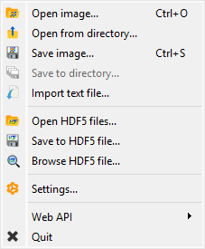
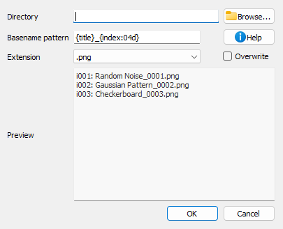
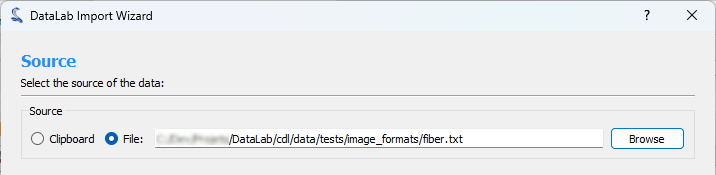
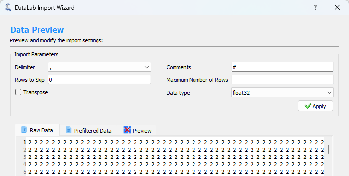
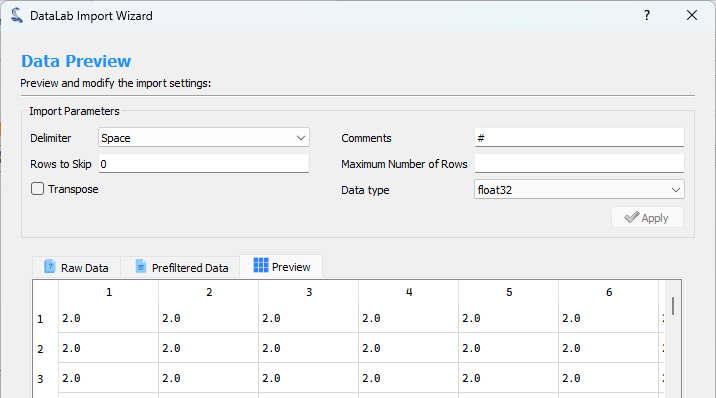
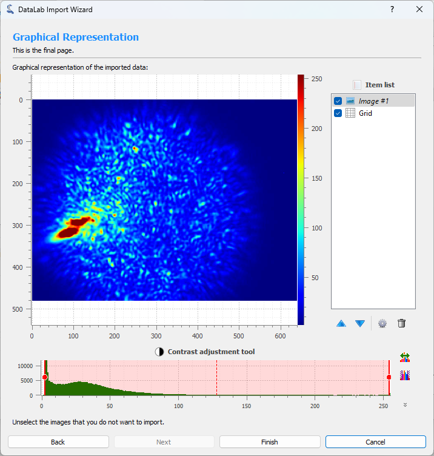

Open and save Images#
This section describes how to open and save images (and workspaces).
Note
For creating new images from mathematical models, see Create Images.

Screenshot of the “File” menu.#
When the “Image Panel” is selected, the menus and toolbars are updated to provide image-related actions.
The “File” menu allows you to:
Open, save and close images (see below).
Save and restore the current workspace or browse HDF5 files (see Overview).
Edit DataLab preferences (see Settings).
Open image#
Create a new image from the following supported filetypes:
File type |
Extensions |
|---|---|
PNG files |
.png |
TIFF files |
.tif, .tiff |
8-bit images |
.jpg, .gif |
NumPy arrays |
.npy |
MAT-Files |
.mat |
Text files |
.txt, .csv, .asc |
Andor SIF files |
.sif |
Princeton Instruments SPE files |
.spe |
Opticks GEL files |
.gel |
Hammamatsu NDPI files |
.ndpi |
PCO Camera REC files |
.rec |
SPIRICON files |
.scor-data |
FXD files |
.fxd |
Bitmap images |
.bmp |
FT-Lab files |
.ima |
Note
DataLab also supports any image format that can be read by the imageio library, provided that the associated plugin(s) are installed (see imageio documentation) and that the output NumPy array data type and shape are supported by DataLab.
To add a new file format, you may use the imageio_formats entry of DataLab configuration file. This entry is a formatted like the IMAGEIO_FORMATS object which represents the natively supported formats:
- sigima.config.IMAGEIO_FORMATS = (('*.gel', 'Opticks GEL'), ('*.spe', 'Princeton Instruments SPE'), ('*.ndpi', 'Hamamatsu Slide Scanner NDPI'), ('*.rec', 'PCO Camera REC'))#
Built-in immutable sequence.
If no argument is given, the constructor returns an empty tuple. If iterable is specified the tuple is initialized from iterable’s items.
If the argument is a tuple, the return value is the same object.
Open from directory#
Open multiple images from a specified directory.
Save image#
Save current image (see “Open image” supported filetypes).
Save images to directory#
Save all selected images to a specified directory, with configurable filename pattern and image format.

Save images to directory dialog.#
When you select “Save to directory…” from the File menu, a dialog appears where you can:
Directory: Choose the target directory where images will be saved
Filename pattern: Define a pattern for the filenames using Python format strings
File extension: Select the output format (.png, .tiff, .h5ima, etc.)
Overwrite: Choose whether to overwrite existing files
Preview: See the list of files that will be created (with object IDs)
The filename pattern supports the following placeholders:
{title}: Image title{index}: 1-based index of the image in the selection (with zero-padding){count}: Total number of selected images{xlabel},{xunit},{ylabel},{yunit},{zlabel},{zunit}: Axis labels and units{metadata[key]}: Access metadata values
You can also use format modifiers, for example {index:03d} will format the index
with 3 digits zero-padding (001, 002, 003, etc.).
Import text file#
DataLab can natively import many types of image files (e.g. TIFF, JPEG, PNG, etc.). However some specific text file formats may not be supported. In this case, you can use the Import text file feature, which allows you to import a text file and convert it to an image.
This feature is accessible from the File menu, under the Import text file option.
It opens an import wizard that guides you through the process of importing the text file.
Step 1: Select the source#
The first step is to select the source of the text file. You can either select a file from your computer or the clipboard if you have copied the text from another application.

Step 1: Select the source#
Step 2: Preview and configure the import#
The second step consists of configuring the import and previewing the result. You can configure the following options:
Delimiter: The character used to separate the values in the text file.
Comments: The character used to indicate that the line is a comment and should be ignored.
Rows to Skip: The number of rows to skip at the beginning of the file.
Maximum Number of Rows: The maximum number of rows to import. If the file contains more rows, they will be ignored.
Transpose: If checked, the rows and columns will be transposed.
Data type: The destination data type of the imported data.
When you are done configuring the import, click the Apply button to see the result.

Step 2: Configure the import#

Step 2: Preview the result#
Step 3: Show graphical representation#
The third step shows a graphical representation of the imported data. You can use the Finish button to import the data into DataLab workspace.

Step 3: Show graphical representation#